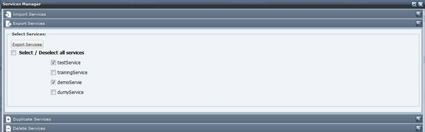

To export a service follows these steps.

Select the Export Services tab.

Select the Service you want to export. Click on the "Export the service descriptor" section link and save the ZIP file (.zip) (including all the selected services) on the local file system.